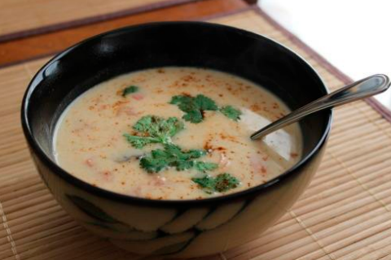

SOPA TOM KHA
IGREDIENTES
- 2 latas de leite de coco (400mL cada)
- 2 xícaras de caldo de galinha
- 2 peitos de frango, descongelados
- 1 colher de sopa de flocos de pimenta vermelha
- 1 colher de sopa de pó de chili
- 1 colher de sopa de pó de gengibre seco
- 3 tomates médios
- 4 cogumelos médios (eu usei Cremini)
- 2 xícaras de camarão sem rabo, cru
- 1 colher de sopa de molho de peixe
- 2 colheres de sopa de suco de limão
- 2 colheres de sopa de açúcar mascavo
- Coriandro picado (para decorar)
MODO DE PREPARO
Em uma panela, combine o leite de coco, o caldo de galinha, os flocos de pimenta vermelha, o pó de chili e o pó de gengibre. Mexa e leve ao fogo médio, mexendo ocasionalmente com uma colher de pau.
Enquanto a sopa esquenta, corte os peitos de frango em fatias. Adicione-os à sopa quando estiver fervendo e cozinhe por cerca de 10-15 minutos ou até que o frango esteja cozido. Você pode testar removendo um pedaço de frango e cortando-o ao meio para garantir que não haja rosa por dentro.
Enquanto o frango cozinha, corte os tomates em pequenos pedaços e os cogumelos em fatias. Adicione-os à panela junto com os camarões e cozinhe por mais 10 minutos.
Adicione o molho de peixe, o suco de limão e o açúcar mascavo. Cozinhe por mais 10 minutos em fogo baixo com a tampa fechada.
em tigelas e decore com pimenta em pó e coentro. Você também pode adicionar uma xícara de coentro picado à sopa se quiser (alguns adoram, outros odeiam. É completamente opcional).
A sopa tem uma combinação perfeita de sopa sedosa e vegetais e carnes em pedaços. É realmente gostosa e farta.